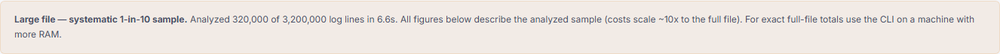

Analyzer / Guides / 1GB Logpush
Analyze 1GB Cloudflare Logpush logs free — no upload
Cloudflare Logpush fields, AWS ALB, Nginx/Apache Combined and W3C Extended auto-detect per line. Files stream in 8MB slices with .gz + multi-file rotation support. Above ~300k lines a labeled systematic sample is analyzed (stride + counts + timing on-screen); 500MB+ exact totals → CLI in the repo.
Measured, not marketing
- 1.02 GB / 3,200,000 lines → 320,000 kept (1-in-10) in 6.6 s read, 13.0 s wall (headless Chromium).
- $2.61 total, $0.25 blockable, 19,272 threats, 427 verification warnings, 18% trap waste.
- 10k fixture: $0.08 → $0.04 total, byte-identical counts — pinned in
sample-data/EXPECTED.md, re-verified by CI.
Steps
- Export Logpush (JSON/JSONL) — .gz is fine, it decompresses in-browser.
- Drop it into the analyzer — progress reads locally, worker kicks in past 20k rows.
- Read Tab 3 crawl budget (16 traps incl. gclid, /filter/, _next/data), Tab 4 cost split, Tab 6 edge rules.
- Files >50MB on mobile trigger a guard; 500MB+ use
node tools/gen-logs.js+ local analyze or the Colab path.
